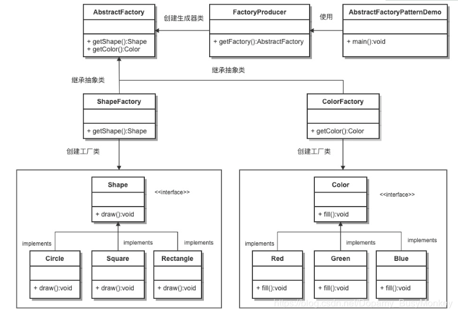

<html>
<head>
    <meta charset="utf-8">
    <meta name="viewport" content="width=device-width, user-scalable=no, initial-scale=1.0, maximum-scale=1.0, minimum-scale=1.0">
    <title>test</title>
    <link rel="stylesheet" href="codemirror-5.45.0/lib/codemirror.css"/>
    <link rel="stylesheet" href="codemirror-5.45.0/theme/dracula.css"/>
    <link rel="stylesheet" href="codemirror-5.45.0/addon/fold/foldgutter.css"/>
    <link rel="stylesheet" href="codemirror-5.45.0/addon/scroll/simplescrollbars.css"/>
    <link rel="stylesheet" href="https://unpkg.com/vonic@2.0.0-beta.11/dist/vonic.min.css">
    <script src="https://unpkg.com/axios@0.15.3/dist/axios.min.js"></script>
    <script src="https://unpkg.com/vue@2.1.10/dist/vue.min.js"></script>
    <script src="https://unpkg.com/vue-router@2.2.1/dist/vue-router.min.js"></script>
    <script src="https://unpkg.com/vonic@2.0.0-beta.11/dist/vonic.min.js"></script>
    <script src="codemirror-5.45.0/lib/codemirror.js"></script>
    <script src="codemirror-5.45.0/mode/groovy/groovy.js"></script>
    <script src="codemirror-5.45.0/mode/clike/clike.js"></script>
    <script src="codemirror-5.45.0/addon/fold/foldcode.js"></script>
    <script src="codemirror-5.45.0/addon/fold/foldgutter.js"></script>
    <script src="codemirror-5.45.0/addon/fold/brace-fold.js"></script>
    <script src="codemirror-5.45.0/addon/fold/comment-fold.js"></script>
    <script src="codemirror-5.45.0/addon/scroll/simplescrollbars.js"></script>
</head>
<style lang="scss">
    .cells-43 > .row > .col {
        padding: 50px 0;
        font-size: 15px;
        font-weight: unset;
    }
    .headerTop {
        font-size: 20px;
        font-weight: bold;
    }
    p {
        padding: 5px 15px 0 0;
        font-size: 12px;
        line-height: 20px;
    }
    .stableBack {
        background:#f5f5f5;
    }
    .textArea {
        padding: 10px 10px 0 10px;
    }
    .imgSize {
        height: 150px;
        width: 100%;
    }
    .redBold {
        font-weight: bold;
        color: red;
    }
    .dividerFont {
        font-weight: bold;
        font-size: 18px;
        color: #3E7087;
    }
</style>
<body>
<von-app></von-app>
</body>
</html>


<script type="text/javascript">
    //// 首页
    const Home = {
        template: `
            <div class="page has-navbar" v-nav="{hideNavbar: true}">
                <div class="page-content">
                    <von-header :theme="'stable'">
                        <span slot="title"><h3 class="padding text-center headerTop">目录</h3></span>
                    </von-header>
                    <cells class="cells-43" :items="cells" :on-cell-click="onCellClick" row="3"></cells>
                </div>
            </div>
        `,
        data() {
            return {
                cells: ['Java基础','数据库基础','网络基础','缓存','中间件','微服务','算法'],
            }
        },
        methods: {
            onCellClick(cellIndex) {
                switch (cellIndex) {
                    case 0: this.$router.push({path: '/java'}); break;
                    case 1: this.$router.push({path: '/dataBase'}); break;
                    case 2: this.$router.push({path: '/netWork'}); break;
                    case 3: this.$router.push({path: '/cache'}); break;
                    case 4: this.$router.push({path: '/middleWare'}); break;
                    case 5: this.$router.push({path: '/microService'}); break;
                    case 6: this.$router.push({path: '/algorithm'}); break;
                    default:
                }
            },
        }
    }

    //// 一级 Java
    const Java = {
        template: `
            <div class="page has-navbar" v-nav="{hideNavbar: true}">
                <div class="page-content">
                    <von-header :theme="'stable'">
                        <button class="button button-icon ion-ios-arrow-back" slot="left" @click="$router.back('/home')"></button>
                        <span slot="title"><h3 class="padding text-center headerTop">Java</h3></span>
                    </von-header>
                    <cells class="cells-43" :items="cells" :on-cell-click="onCellClick" row="3"></cells>
                </div>
            </div>
        `,
        data() {
            return {
                cells: ['集合','锁','设计模式','线程','流式编程','JVM',' 类加载器','杂项'],
            }
        },
        methods: {
            onCellClick(cellIndex) {
                switch (cellIndex) {
                    case 0: this.$router.push({path: `/collection`}); break;
                    case 1: this.$router.push({path: `/lock`}); break;
                    case 2: this.$router.push({path: `/designMode`}); break;
                    case 3: this.$router.push({path: `/thread`}); break;
                    case 4: break;
                    case 5: break;
                    case 6: break;
                    case 7: this.$router.push({path: `/other`}); break;
                    default: this.$router.push({path: `/demo`});
                }

            },
        }
    }
    //// 二级 集合
    const Collection = {
        template: `
            <div class="page has-navbar" v-nav="{hideNavbar: true}">
                <div class="page-content">
                    <von-header :theme="'stable'">
                        <button class="button button-icon ion-ios-arrow-back" slot="left" @click="$router.back('/java')"></button>
                        <span slot="title"><h3 class="padding text-center headerTop">集合</h3></span>
                    </von-header>
                    <span @click="$router.push('/hashMap')">
                        <item class="item-icon-right">HashMap<i class="icon ion-ios-arrow-right"></i></item>
                    </span>
                    <accordion default-index="0">
                        <accordion-item class="stableBack" title="Map的比较" content-height="280">
                            <p>HashMap非线程安全，HashTable 和 ConcurrentHashMap线程安全</p>
                            <p>Hashtable既不支持Null key也不支持Null value，Hashtable的put()方法的注释中有说明</p>
                            <p>TreeMap是自然有序的，初始化时可以使用一些排序方法得到需要顺序的map</p>
                            <p>ConcurrentHashMap 使用了分段锁，sychronized关键字（跟HashTable不同，HashTable是锁整个表）</p>
                        </accordion-item>
                    </accordion>
                </div>
            </div>
        `,
        data() {
            return {

            }
        },
        methods: {

        }
    }
    //// 二级 锁
    const Lock = {
        template: `
            <div class="page has-navbar" v-nav="{hideNavbar: true}">
                <div class="page-content">
                    <von-header :theme="'stable'">
                        <button class="button button-icon ion-ios-arrow-back" slot="left" @click="$router.back('/java')"></button>
                        <span slot="title"><h3 class="padding text-center headerTop">锁</h3></span>
                    </von-header>
                    <accordion default-index="0">
                        <div class="item item-divider dividerFont">乐观锁和悲观锁</div>
                        <accordion-item class="stableBack" title="悲观锁" content-height="180">
                            <p>悲观锁(Pessimistic Lock), 顾名思义，就是很悲观，每次去拿数据的时候都认为别人会修改，所以每次在拿数据的时候都会上锁，这样别人想拿这个数据就会block直到它拿到锁。传统的关系型数据库里边就用到了很多这种锁机制，比如行锁，表锁等，读锁，写锁等，都是在做操作之前先上锁。</p>
                        </accordion-item>
                        <accordion-item class="stableBack" title="乐观锁" content-height="280">
                            <p>乐观锁(Optimistic Lock), 顾名思义，就是很乐观，每次去拿数据的时候都认为别人不会修改，所以不会上锁，但是在更新的时候会判断一下在此期间别人有没有去更新这个数据，可以使用<span class="redBold">版本号等机制</span>。乐观锁适用于多读的应用类型，这样可以提高吞吐量，像数据库如果提供类似于write_condition机制的其实都是提供的乐观锁。java中的乐观锁基本都是通过<span class="redBold">CAS操作</span>实现的，CAS 是一种更新的原子操作，CAS算法 即compare and swap（比较与交换），是一种有名的无锁算法。无锁编程，即不使用锁的情况下实现多线程之间的变量同步，也就是在没有线程被阻塞的情况下实现变量的同步，所以也叫非阻塞同步（Non-blocking Synchronization）。</p>
                        </accordion-item>
                        <div class="item item-divider dividerFont">可重入锁（排他锁）</div>
                        <accordion-item class="stableBack" title="ReentrantLock" content-height="800">
                            <p>ReentrantLock是一个是可重入锁（排他锁），同一时间只允许一个线程访问，可以指定构造函数的boolean类型来创建公平锁和非公平锁（默认）,比如：公平锁可以使用new ReentrantLock(true)实现。 与之对应的是<span class="redBold">共享锁</span>，同一时间允许多个线程同时获取锁</p>
                            <div><textarea id="ReentrantLock"></textarea></div>
                            <p>带条件的ReentrantLock</p>
                            <div><textarea id="ReentrantLockCond"></textarea></div>
                        </accordion-item>
                        <accordion-item class="stableBack" title="synchronized" content-height="890">
                            <p>原理或机制是：每一个锁关联一个线程持有者和计数器，当计数器为 0 时表示该锁没有被任何线程持有，那么任何线程都可能获得该锁而调用相应的方法；当某一线程请求成功后，JVM会记下锁的持有线程，并且将计数器置为 1；此时其它线程请求该锁，则必须等待；而该持有锁的线程如果再次请求这个锁，就可以再次拿到这个锁，同时计数器会递增；当线程退出同步代码块时，计数器会递减，如果计数器为 0，则释放该锁。</p>
                            <p>同步方法</p>
                            <div><textarea id="synchronizedMethod"></textarea></div>
                            <p>代码块对象同步</p>
                            <div><textarea id="synchronizedCode"></textarea></div>
                        </accordion-item>
                        <accordion-item class="stableBack" title="相同点" content-height="190">
                            <p>它们都是加锁方式同步，都是重入锁；</p>
                            <p>阻塞式的同步；也就是说当如果一个线程获得了对象锁，进入了同步块，其他访问该同步块的线程都必须阻塞在同步块外面等待，而进行线程阻塞和唤醒的代价是比较高的（操作系统需要在用户态与内核态之间来回切换，代价很高，不过可以通过对锁优化进行改善）</p>
                        </accordion-item>
                        <accordion-item class="stableBack" title="区别" content-height="420">
                            <p>Synchronized 它是java语言的关键字，是原生语法层面的互斥，需要jvm实现。ReenTrantLock它是JDK 1.5之后提供的API层面的互斥锁类</p>
                            <p>Synchronized 通过JVM加锁解锁，不需要手动释放，更简单更安全。ReenTrantLock API层面的加锁解锁，<span class="redBold">需要手动释放锁</span></p>
                            <p>Synchronized  不可中断，除非抛出异常。释放锁方式：代码执行完，正常释放锁。ReenTrantLock 可中断，可设置超时时间</p>
                            <p>Synchronized  非公平锁，ReenTrantLock 可设置公平锁</p>
                            <p>ReenTrantLock 可以带条件锁</p>
                            <p>ReentrantLock提供了多样化的同步，比如有时间限制的同步，可以被Interrupt的同步（synchronized的同步是不能Interrupt的）等。在资源竞争不激烈的情形下，性能稍微比synchronized差点点。但是当同步非常激烈的时候，synchronized的性能一下子能下降好几十倍。而ReentrantLock确还能维持常态。</p>
                        </accordion-item>
                        <div class="item item-divider dividerFont">可重入锁（共享锁）</div>
                        <accordion-item class="stableBack" title="ReentrantReadWriteLock" content-height="190">
                            <p>ReentrantReadWriteLock是Lock的另一种实现方式，我们已经知道了ReentrantLock是一个排他锁，同一时间只允许一个线程访问，而ReentrantReadWriteLock允许多个读线程同时访问（共享锁），<span class="redBold">但不允许写线程和读线程、写线程和写线程同时访问</span>。相对于排他锁，提高了并发性。在实际应用中，大部分情况下对共享数据（如缓存）的访问都是读操作远多于写操作，这时ReentrantReadWriteLock能够提供比排他锁更好的并发性和吞吐量。</p>
                        </accordion-item>
                        <accordion-item class="stableBack" title="JDK锁框架" content-height="150">
                            <div></div>
                        </accordion-item>
                        <accordion-item class="stableBack" title="AQS（AbstractQueuedSynchronizer）" content-height="600">
                            <p>AbstractQueuedSynchronizer （抽象队列同步器，以下简称 AQS）出现在 JDK 1.5 中，由大师 Doug Lea 所创作。AQS 是很多同步器的基础框架，比如 ReentrantLock、CountDownLatch 和 Semaphore 等都是基于 AQS 实现的。除此之外，我们还可以基于 AQS，定制出我们所需要的同步器。</p>
                            <p>在 AQS 内部，通过维护一个FIFO 队列来管理多线程的排队工作。在公平竞争的情况下，无法获取同步状态的线程将会被封装成一个节点，置于队列尾部。入队的线程将会通过自旋的方式获取同步状态，若在有限次的尝试后，仍未获取成功，线程则会被阻塞住。大致示意图如下：</p>
                            <div></div>
                            <p>当头结点释放同步状态后，且后继节点对应的线程被阻塞，此时头结点线程将会去唤醒后继节点线程。后继节点线程恢复运行并获取同步状态后，会将旧的头结点从队列中移除，并将自己设为头结点。大致示意图如下：</p>
                            <div></div>
                        </accordion-item>
                        <accordion-item class="stableBack" title="LockSupport" content-height="650">
                            <div style="transform: rotate(90deg);"></div>
                        </accordion-item>
                    </accordion>
                </div>
            </div>
        `,
        data() {
            return {
                ReentrantLock:
                    "package com.busymonkey.threadfunc;\n" +
                    "import java.util.concurrent.locks.Lock;\n" +
                    "import java.util.concurrent.locks.ReentrantLock;\n" +
                    "public class ReentrantLockTest implements Runnable{\n" +
                    "\tprivate int tickets = 100;\n" +
                    "\tprivate Lock lock = new ReentrantLock();\n" +
                    " \n" +
                    "\t@Override\n" +
                    "\tpublic void run() {\n" +
                    "\t\twhile (tickets > 0) {\n" +
                    "\t\t\ttry {\n" +
                    "\t\t\t\tlock.lock();// 加锁\n" +
                    "\t\t\t\t//lock.tryLock();\n" +
                    "\t\t\t\t//lock.tryLock(time, unit);\n" +
                    "\t\t\t\tif (tickets > 0) {\n" +
                    "\t\t\t\t\ttry {\n" +
                    "\t\t\t\t\t\tThread.sleep(100);\n" +
                    "\t\t\t\t\t} catch (InterruptedException e) {\n" +
                    "\t\t\t\t\t\te.printStackTrace();\n" +
                    "\t\t\t\t\t}\n" +
                    "\t\t\t\t\tSystem.out.println(Thread.currentThread().getName() + \"正在出售第\" + (tickets--) + \"张票\");\n" +
                    "\t\t\t\t}\n" +
                    "\t\t\t} finally {\n" +
                    "\t\t\t\tlock.unlock();// 释放锁\n" +
                    "\t\t\t}\n" +
                    "\t\t}\n" +
                    "\t}\n" +
                    "}\n",
                ReentrantLockCond:
                    "import java.util.concurrent.locks.Condition;\n" +
                    "import java.util.concurrent.locks.Lock;\n" +
                    "import java.util.concurrent.locks.ReentrantLock;\n" +
                    " \n" +
                    "public class LockMain {\n" +
                    " \n" +
                    "    static class NumberWrapper {\n" +
                    "        public int value = 1;\n" +
                    "    }\n" +
                    " \n" +
                    "    public static void main(String[] args)  {\n" +
                    "        //初始化可重入锁\n" +
                    "        final Lock lock = new ReentrantLock();\n" +
                    "        //第一个条件当屏幕上输出到3\n" +
                    "        final Condition reachThreeCondition = lock.newCondition();\n" +
                    "        //第二个条件当屏幕上输出到6\n" +
                    "        final Condition reachSixCondition = lock.newCondition();\n" +
                    "        //NumberWrapper只是为了封装一个数字，一边可以将数字对象共享，并可以设置为final\n" +
                    "        final NumberWrapper num = new NumberWrapper();\n" +
                    "        //初始化A线程\n" +
                    "        Thread threadA = new Thread(new Runnable() {\n" +
                    "            @Override\n" +
                    "            public void run() {\n" +
                    "                //需要先获得锁\n" +
                    "                lock.lock();\n" +
                    "                try {\n" +
                    "                    //A线程先输出前3个数\n" +
                    "                    while (num.value <= 3) {\n" +
                    "                        System.out.println(\"threadA start write\"+num.value);\n" +
                    "                        num.value++;\n" +
                    "                    }\n" +
                    "                    //输出到3时要signal，告诉B线程可以开始了\n" +
                    "                    reachThreeCondition.signal();\n" +
                    "                } finally {\n" +
                    "                    lock.unlock();\n" +
                    "                }\n" +
                    "                lock.lock();\n" +
                    "                try {\n" +
                    "                    //等待输出6的条件\n" +
                    "                    reachSixCondition.await();\n" +
                    "                    //输出剩余数字\n" +
                    "                    while (num.value <= 9) {\n" +
                    "                        System.out.println(\"threadA start write\"+num.value);\n" +
                    "                        num.value++;\n" +
                    "                    }\n" +
                    " \n" +
                    "                } catch (InterruptedException e) {\n" +
                    "                    e.printStackTrace();\n" +
                    "                } finally {\n" +
                    "                    lock.unlock();\n" +
                    "                }\n" +
                    "            }\n" +
                    "        });\n" +
                    " \n" +
                    " \n" +
                    "        Thread threadB = new Thread(new Runnable() {\n" +
                    "            @Override\n" +
                    "            public void run() {\n" +
                    "                try {\n" +
                    "                    lock.lock();\n" +
                    " \n" +
                    "                    while (num.value <= 3) {\n" +
                    "                        //等待3输出完毕的信号\n" +
                    "                        reachThreeCondition.await();\n" +
                    "                    }\n" +
                    "                } catch (InterruptedException e) {\n" +
                    "                    e.printStackTrace();\n" +
                    "                } finally {\n" +
                    "                    lock.unlock();\n" +
                    "                }\n" +
                    "                try {\n" +
                    "                    lock.lock();\n" +
                    "                    //已经收到信号，开始输出4，5，6\n" +
                    "                    while (num.value <= 6) {\n" +
                    "                    \tSystem.out.println(\"threadB start write\"+num.value);\n" +
                    "                        num.value++;\n" +
                    "                    }\n" +
                    "                    //4，5，6输出完毕，告诉A线程6输出完了\n" +
                    "                    reachSixCondition.signal();\n" +
                    "                } finally {\n" +
                    "                    lock.unlock();\n" +
                    "                }\n" +
                    "            }\n" +
                    "        });\n" +
                    " \n" +
                    "        //启动两个线程\n" +
                    "        threadB.start();\n" +
                    "        threadA.start();\n" +
                    "    }\n" +
                    " \n" +
                    "}\n",
                synchronizedMethod: "package com.busy.lock.test;\n" +
                    "\n" +
                    "public class SynchronizeThread implements Runnable {\n" +
                    "\n" +
                    "\tprivate int tickets = 100;\n" +
                    "\t\n" +
                    "\t@Override\n" +
                    "\tpublic void run() {\n" +
                    "\t\twhile (tickets > 0) {\n" +
                    "\t\t\ttry {\n" +
                    "\t\t\t\tdoMethod();\n" +
                    "\t\t\t} finally {\n" +
                    "\t\t\t\t\n" +
                    "\t\t\t}\n" +
                    "\t\t}\n" +
                    "\t}\n" +
                    "\t\n" +
                    "\tprivate synchronized void doMethod() {\n" +
                    "\t\tif (tickets > 0) {\n" +
                    "\t\t\ttry {\n" +
                    "\t\t\t\tThread.sleep(50);\n" +
                    "\t\t\t} catch (InterruptedException e) {\n" +
                    "\t\t\t\te.printStackTrace();\n" +
                    "\t\t\t}\n" +
                    "\t\t\tSystem.out.println(Thread.currentThread().getName() + \"正在出售第\" + (tickets--) + \"张票\");\n" +
                    "\t\t}\n" +
                    "\t}\n" +
                    "}\n",
                synchronizedCode: "package com.busy.lock.test;\n" +
                    "\n" +
                    "public class SynchronizeThread implements Runnable {\n" +
                    "\n" +
                    "\tprivate int tickets = 100;\n" +
                    "\t\n" +
                    "\t@Override\n" +
                    "\tpublic void run() {\n" +
                    "\t\twhile (tickets > 0) {\n" +
                    "\t\t\ttry {\n" +
                    "\t\t\t\tsynchronized (this) {\n" +
                    "\t\t\t\t\tif (tickets > 0) {\n" +
                    "\t\t\t\t\t\ttry {\n" +
                    "\t\t\t\t\t\t\tThread.sleep(50);\n" +
                    "\t\t\t\t\t\t} catch (InterruptedException e) {\n" +
                    "\t\t\t\t\t\t\te.printStackTrace();\n" +
                    "\t\t\t\t\t\t}\n" +
                    "\t\t\t\t\t\tSystem.out.println(Thread.currentThread().getName() + \"正在出售第\" + (tickets--) + \"张票\");\n" +
                    "\t\t\t\t\t}\n" +
                    "\t\t\t\t}\n" +
                    "\t\t\t} finally {\n" +
                    "\t\t\t}\n" +
                    "\t\t}\n" +
                    "\t}\n" +
                    "\t\n" +
                    "}",
                options: {
                    tabSize: 4,
                    theme: "dracula",
                    readOnly: true,
                    scrollbarStyle: "simple",
                }
            }
        },
        mounted() {
            let editorReentrantLock = CodeMirror.fromTextArea(document.getElementById("ReentrantLock"), this.options)
            editorReentrantLock.setValue(this.ReentrantLock)
            editorReentrantLock.setSize('auto','300px');
            let editorReentrantLockCond = CodeMirror.fromTextArea(document.getElementById("ReentrantLockCond"), this.options)
            editorReentrantLockCond.setValue(this.ReentrantLockCond)
            editorReentrantLockCond.setSize('auto','300px');
            let editorSynchronizedMethod = CodeMirror.fromTextArea(document.getElementById("synchronizedMethod"), this.options)
            editorSynchronizedMethod.setValue(this.synchronizedMethod)
            editorSynchronizedMethod.setSize('auto','300px');
            let editorSynchronizedCode = CodeMirror.fromTextArea(document.getElementById("synchronizedCode"), this.options)
            editorSynchronizedCode.setValue(this.synchronizedCode)
            editorSynchronizedCode.setSize('auto','300px');
        }
    }
    //// 二级 设计模式
    const DesignMode = {
        template: `
            <div class="page has-navbar" v-nav="{hideNavbar: true}">
                <div class="page-content">
                    <von-header :theme="'stable'">
                        <button class="button button-icon ion-ios-arrow-back" slot="left" @click="$router.back('/java')"></button>
                        <span slot="title"><h3 class="padding text-center headerTop">设计模式</h3></span>
                    </von-header>
                    <accordion default-index="0">
                        <div class="item item-divider dividerFont">单例模式</div>
                        <accordion-item class="stableBack" title="懒加载" content-height="400">
                            <p>这种写法能够在多线程中很好的工作，而且看起来它也具备很好的lazy loading，但是，遗憾的是，效率很低，99%情况下不需要同步。</p>
                            <div><textarea id="singleLazy"></textarea></div>
                        </accordion-item>
                        <accordion-item class="stableBack" title="预加载" content-height="360">
                            <p>这种方式基于classloder机制避免了多线程的同步问题，不过，instance在类装载时就实例化，虽然导致类装载的原因有很多种，在单例模式中大多数都是调用getInstance方法， 但是也不能确定有其他的方式（或者其他的静态方法）导致类装载，这时候初始化instance显然没有达到lazy loading的效果。</p>
                            <div><textarea id="singlePre"></textarea></div>
                        </accordion-item>
                        <accordion-item class="stableBack" title="静态内部类" content-height="360">
                            <p>懒加载，而且在JVM层实现了线程安全（如果不是多个类加载器环境）</p>
                            <div><textarea id="singleInnerClass"></textarea></div>
                        </accordion-item>
                        <accordion-item class="stableBack" title="枚举" content-height="320">
                            <p>这种方式是Effective Java作者Josh Bloch 提倡的方式，它不仅能避免多线程同步问题，而且还能防止反序列化重新创建新的对象，可谓是很坚强的壁垒啊，不过，个人认为由于1.5中才加入enum特性，用这种方式写不免让人感觉生疏，在实际工作中，我也很少看见有人这么写过。</p>
                            <div><textarea id="singleEnum"></textarea></div>
                        </accordion-item>
                        <accordion-item class="stableBack" title="双重校验锁" content-height="410">
                            <p>懒加载的升级版，俗称双重检查锁定，在JDK1.5之后，双重检查锁定才能够正常达到单例效果。</p>
                            <div><textarea id="singleDouble"></textarea></div>
                        </accordion-item>
                        <div class="item item-divider dividerFont">工厂模式</div>
                        <accordion-item class="stableBack" title="简单工厂" content-height="400">
                            <p>一个工厂只生产一种产品：</p>
                            <p>1、工厂类角色：这是本模式的核心，含有一定的商业逻辑和判断逻辑。在java中它往往由一个具体类实现。</p>
                            <p>2、抽象产品角色：它一般是具体产品继承的父类或者实现的接口。在java中由接口或者抽象类来实现。</p>
                            <p>3、具体产品角色：工厂类所创建的对象就是此角色的实例。在java中由一个具体类实现。</p>
                            <div></div>
                        </accordion-item>
                        <accordion-item class="stableBack" title="复杂工厂" content-height="470">
                            <p>将简单工厂模式的工厂抽象出来，多个工厂生产一个产品：</p>
                            <p>1、抽象工厂角色：这是工厂方法模式的核心，它与应用程序无关。是具体工厂角色必须实现的接口或者必须继承的父类。在java中它由抽象类或者接口来实现。</p>
                            <p>2、具体工厂角色：它含有和具体业务逻辑有关的代码。由应用程序调用以创建对应的具体产品的对象。</p>
                            <p>3、抽象产品角色：它是具体产品继承的父类或者是实现的接口。在java中一般有抽象类或者接口来实现。</p>
                            <p>4、具体产品角色：具体工厂角色所创建的对象就是此角色的实例。在java中由具体的类来实现。</p>
                            <div></div>
                        </accordion-item>
                        <accordion-item class="stableBack" title="抽象工厂" content-height="750">
                            <p>将工厂模式的产品拓展为产品簇，即多个工厂生产多个产品，角色分类跟工厂模式相同</p>
                            <div></div>
                            <div><textarea id="abstractFactory"></textarea></div>
                            <p>在抽象工厂模式中增加一个工厂</p>
                            <div></div>
                            <p>在抽象工厂模式中增加一个产品</p>
                            <div></div>
                        </accordion-item>
                    </accordion>
                </div>
            </div>
        `,
        data() {
            return {
                singleLazy:
                    "public class Singleton { \n" +
                    "    private static Singleton instance;\n" +
                    "    private Singleton (){}\n" +
                    "    public static synchronized Singleton getInstance() {\n" +
                    "    if (instance == null) {\n" +
                    "        instance = new Singleton();\n" +
                    "    }\n" +
                    "    return instance;\n" +
                    "    }\n" +
                    "}",
                singlePre:
                    "public class Singleton { \n" +
                    "    private static Singleton instance = new Singleton();\n" +
                    "    private Singleton (){}\n" +
                    "    public static Singleton getInstance() {\n" +
                    "       return instance;\n" +
                    "    }\n" +
                    "}",
                singleInnerClass:
                    "public class Singleton { \n" +
                    "    private static class SingletonHolder {\n" +
                    "       private static final Singleton INSTANCE = new Singleton();\n" +
                    "    }\n" +
                    "    private Singleton (){}\n" +
                    "    public static final Singleton getInstance() {\n" +
                    "       return SingletonHolder.INSTANCE;\n" +
                    "    }\n" +
                    "}",
                singleEnum:
                    "public enum Singleton {\n" +
                    "    INSTANCE;\n" +
                    "    public void whateverMethod() {\n" +
                    "    }\n" +
                    "}",
                singleDouble:
                    "public class Singleton { \n" +
                    "    private volatile static Singleton singleton;\n" +
                    "    private Singleton (){}\n" +
                    "    public static Singleton getSingleton() {\n" +
                    "       if (instance == null) {\n" +
                    "           synchronized (Singleton.class) {\n" +
                    "               if (singleton == null) {\n" +
                    "                   singleton = new Singleton();\n" +
                    "               }\n" +
                    "           }\n" +
                    "       }\n" +
                    "       return singleton;\n" +
                    "    }\n" +
                    "}",
                abstractFactory:
                    "AbstractFactory shapeFactory = FactoryProducer.getFactory(\"SHAPE\");\n" +
                    "Shape shape1 = shapeFactory.getShape(\"CIRCLE\");\n" +
                    "shape1.draw();\n",
                options: {
                    tabSize: 2,
                    theme: "dracula",
                    readOnly: true,
                    scrollbarStyle: "simple",
                }
            }
        },
        methods: {

        },
        mounted() {
            let editorSingleLazy = CodeMirror.fromTextArea(document.getElementById("singleLazy"), this.options)
            editorSingleLazy.setValue(this.singleLazy)
            editorSingleLazy.setSize('auto','250px');
            let editorSinglePre = CodeMirror.fromTextArea(document.getElementById("singlePre"), this.options)
            editorSinglePre.setValue(this.singlePre)
            editorSinglePre.setSize('auto','200px');
            let editorSingleInnerClass = CodeMirror.fromTextArea(document.getElementById("singleInnerClass"), this.options)
            editorSingleInnerClass.setValue(this.singleInnerClass)
            editorSingleInnerClass.setSize('auto','220px');
            let editorSingleEnum = CodeMirror.fromTextArea(document.getElementById("singleEnum"), this.options)
            editorSingleEnum.setValue(this.singleEnum)
            editorSingleEnum.setSize('auto','120px');
            let editorSingleDouble = CodeMirror.fromTextArea(document.getElementById("singleDouble"), this.options)
            editorSingleDouble.setValue(this.singleDouble)
            editorSingleDouble.setSize('auto','290px');
            let editorAbstractFactory = CodeMirror.fromTextArea(document.getElementById("abstractFactory"), this.options)
            editorAbstractFactory.setValue(this.abstractFactory)
            editorAbstractFactory.setSize('auto','100px');
        }
    }
    //// 二级 线程
    const Thread = {
        template: `
            <div class="page has-navbar" v-nav="{hideNavbar: true}">
                <div class="page-content">
                    <von-header :theme="'stable'">
                        <button class="button button-icon ion-ios-arrow-back" slot="left" @click="$router.back('/java')"></button>
                        <span slot="title"><h3 class="padding text-center headerTop">线程</h3></span>
                    </von-header>
                    <accordion default-index="0">
                        <accordion-item class="stableBack" title="线程状态" content-height="90">
                            <p>NEW（start之前）、RUNNABLE、BLOCKED（同步块）、WAITING（wait()）、TIMED_WAITING、TERMINATED</p>
                        </accordion-item>
                        <div class="item item-divider dividerFont">主线程和子线程</div>
                        <accordion-item class="stableBack" title="start和run" content-height="340">
                            <p>首先new Thread()出来的对象会分配一个线程名称</p>
                            <p><span class="redBold">start</span>：来启动线程，真正实现了多线程运行。这时无需等待run方法体代码执行完毕，可以直接继续执行下面的代码；通过调用Thread类的start()方法来启动一个线程， 这时此线程是处于就绪状态， 并没有运行。 然后通过此Thread类调用方法run()来完成其运行操作的， 这里方法run()称为线程体，它包含了要执行的这个线程的内容， Run方法运行结束， 此线程终止。然后CPU再调度其它线程。</p>
                            <p><span class="redBold">run</span>：相当于普通方法调用。<span class="redBold">程序还是会顺序执行</span>，要等待run方法体执行完毕后，才可继续执行下面的代码； 程序中只有主线程——这一个线程， 其程序执行路径还是只有一条， 这样就没有达到写线程的目的。</p>
                        </accordion-item>
                        <accordion-item class="stableBack" title="主线程结束后不影响子线程" content-height="350">
                            <div><textarea id="mainSub1"></textarea></div>
                        </accordion-item>
                        <accordion-item class="stableBack" title="主线程等待子线程结束后结束" content-height="350">
                            <div><textarea id="mainSub2"></textarea></div>
                        </accordion-item>
                        <accordion-item class="stableBack" title="主线程结束后子线程（守护线程）立即终止" content-height="380">
                            <p>子线程需要设置守护线程</p>
                            <div><textarea id="mainSub3"></textarea></div>
                        </accordion-item>
                        <accordion-item class="stableBack" title="守护线程" content-height="180">
                            <p>User和Daemon两者几乎没有区别，唯一的不同之处就在于虚拟机的离开：如果 User Thread已经全部退出运行了，只剩下Daemon Thread存在了，虚拟机也就退出了。 因为没有了被守护者，Daemon也就没有工作可做了，也就没有继续运行程序的必要了。</p>
                        </accordion-item>
                        <div class="item item-divider dividerFont">sleep和wait</div>
                        <accordion-item class="stableBack" title="sleep" content-height="210">
                            <p>sleep()方法是线程类（Thread）的静态方法，使得当前线程进入阻塞状态，给执行机会给其他线程（实际上，调用sleep()方法时并不要求持有任何锁，即sleep()可在任何地方使用。），但是监控状态依然保持，到时后会自动恢复。</p>
                            <p>当线程处于上锁时，sleep()方法<span class="redBold">不会释放对象锁，只会让出CPU执行时间片</span>。休眠时间满后，该线程不一定会立即执行，等待CPU调度。</p>
                        </accordion-item>
                        <accordion-item class="stableBack" title="wait" content-height="260">
                            <p>wait()方法是Object类里的方法，当一个线程执行wait()方法时，它就进入到一个和该对象相关的等待池中（进入等待队列，也就是阻塞的一种，叫等待阻塞），<span class="redBold">同时释放对象锁，并让出CPU资源</span>，待指定时间结束后返还得到对象锁。</p>
                            <p>wait()使用notify()方法、notiftAll()方法唤醒当前等待池中的线程。等待的线程只是被激活，但是必须得再次获得锁才能继续往下执行。wait()方法、notify()方法和notiftAll()方法用于协调多线程对共享数据的存取，所以<span class="redBold">只能在同步方法或者同步块中使用</span>，否则抛出IllegalMonitorStateException。</p>
                        </accordion-item>
                        <div class="item item-divider dividerFont">线程相关方法</div>
                        <accordion-item class="stableBack" title="join" content-height="420">
                            <p>调用isAlive()判断形成是否活跃，活跃则调用wait()方法等待，活跃是native方法（<span class="redBold">子线程都在运行则活跃</span>）</p>
                            <div><textarea id="threadJoin"></textarea></div>
                        </accordion-item>
                        <accordion-item class="stableBack" title="yield" content-height="420">
                            <p>让出同优先级线程的CPU时间片</p>
                            <p>public static native void yield();</p>
                        </accordion-item>
                    </accordion>
                </div>
            </div>
        `,
        data() {
            return {
                mainSub1: "public class SubThread implements Runnable {\n" +
                    "    @Override\n" +
                    "    public void run() {\n" +
                    "        try {\n" +
                    "            System.out.println(\"子线程启动\");\n" +
                    "            Thread.sleep(5000);\n" +
                    "            System.out.println(\"子线程结束\");\n" +
                    "        } catch (InterruptedException e) {\n" +
                    "            e.printStackTrace();\n" +
                    "        }\n" +
                    "    }\n" +
                    "}\n" +
                    "\n" +
                    "public static void main(String[] args) throws InterruptedException {\n" +
                    "    System.out.println(\"主线程启动\");\n" +
                    "    Thread thread = new Thread(new SubThread());\n" +
                    "    thread.start();\n" +
                    "    Thread.sleep(100);\n" +
                    "    System.out.println(\"主线程结束\");\n" +
                    "}\n" +
                    "\n" +
                    "结果：\n" +
                    "主线程启动\n" +
                    "子线程启动\n" +
                    "主线程结束\n" +
                    "子线程结束",
                mainSub2: "public class TestMain {\n" +
                    "    public static void main(String[] args) throws InterruptedException {\n" +
                    "        System.out.println(\"主线程启动\");\n" +
                    "        Thread thread = new Thread(new SubThread());\n" +
                    "        thread.start();\n" +
                    "        thread.join();\n" +
                    "        Thread.sleep(100);\n" +
                    "        System.out.println(\"主线程结束\");\n" +
                    "    }\n" +
                    "}\n" +
                    "\n" +
                    "结果：\n" +
                    "主线程启动\n" +
                    "子线程启动\n" +
                    "子线程结束\n" +
                    "主线程结束",
                mainSub3: "public class MainTest {\n" +
                    "    public static void main(String[] args) throws InterruptedException {\n" +
                    "        System.out.println(\"主线程启动\");\n" +
                    "        Thread thread = new Thread(new SubThread());\n" +
                    "        thread.setDaemon(true);\n" +
                    "        thread.start();\n" +
                    "        Thread.sleep(100);\n" +
                    "        System.out.println(\"主线程结束\");\n" +
                    "    }\n" +
                    "}\n" +
                    "\n" +
                    "\n" +
                    "结果：\n" +
                    "主线程启动\n" +
                    "子线程启动\n" +
                    "主线程结束\n",
                threadJoin: "public final synchronized void join(long millis) throws InterruptedException {\n" +
                    "    long base = System.currentTimeMillis();\n" +
                    "    long now = 0;\n" +
                    "\n" +
                    "    if (millis < 0) {\n" +
                    "        throw new IllegalArgumentException(\"timeout value is negative\");\n" +
                    "    }\n" +
                    "\n" +
                    "    if (millis == 0) {\n" +
                    "        while (isAlive()) {\n" +
                    "            wait(0);\n" +
                    "        }\n" +
                    "    } else {\n" +
                    "        while (isAlive()) {\n" +
                    "            long delay = millis - now;\n" +
                    "            if (delay <= 0) {\n" +
                    "                break;\n" +
                    "            }\n" +
                    "            wait(delay);\n" +
                    "            now = System.currentTimeMillis() - base;\n" +
                    "        }\n" +
                    "    }\n" +
                    "}\n" +
                    "\n" +
                    "public final native boolean isAlive();",
                options: {
                    tabSize: 4,
                    theme: "dracula",
                    readOnly: true,
                    scrollbarStyle: "simple",
                }
            }
        },
        mounted() {
            let editorMainSub1 = CodeMirror.fromTextArea(document.getElementById("mainSub1"), this.options)
            editorMainSub1.setValue(this.mainSub1)
            editorMainSub1.setSize('auto','300px')
            let editorMainSub2 = CodeMirror.fromTextArea(document.getElementById("mainSub2"), this.options)
            editorMainSub2.setValue(this.mainSub2)
            editorMainSub2.setSize('auto','300px')
            let editorMainSub3 = CodeMirror.fromTextArea(document.getElementById("mainSub3"), this.options)
            editorMainSub3.setValue(this.mainSub3)
            editorMainSub3.setSize('auto','300px')
            let editorThreadJoin = CodeMirror.fromTextArea(document.getElementById("threadJoin"), this.options)
            editorThreadJoin.setValue(this.threadJoin)
            editorThreadJoin.setSize('auto','300px')
        }
    }
    //// 二级 杂项
    const Other = {
        template: `
            <div class="page has-navbar" v-nav="{hideNavbar: true}">
                <div class="page-content">
                    <von-header :theme="'stable'">
                        <button class="button button-icon ion-ios-arrow-back" slot="left" @click="$router.back('/java')"></button>
                        <span slot="title"><h3 class="padding text-center headerTop">杂项</h3></span>
                    </von-header>
                    <accordion default-index="0">
                        <accordion-item class="stableBack" title="volatile" content-height="220">
                            <p>volatile让变量每次在使用的时候，都从<span class="redBold">主存</span>中取。而不是从各个线程的“工作内存”</p>
                            <p>volatile具有synchronized关键字的“可见性”，但是没有synchronized关键字的“并发正确性”，就是说<span class="redBold">不保证线程执行的有序性</span></p>
                            <p>volatile变量对于每次使用，线程都能得到当前volatile变量的最新值。</p>
                        </accordion-item>
                        <accordion-item class="stableBack" title="transient" content-height="280">
                            <p>对于已实现Serilizable接口，将不需要序列化的属性前添加关键字transient，序列化对象的时候，这个属性就不会序列化到指定的目的地中</p>
                            <p>一个静态变量不管是否被transient修饰，均不能被序列化</p>
                            <p><span class="redBold">被transient关键字修饰的变量真的不能被序列化吗？</span>若实现的是Externalizable接口，则没有任何东西可以自动序列化，需要在writeExternal方法中进行手工指定所要序列化的变量，这与是否被transient修饰无关。因此第二个例子输出的是变量content初始化的内容，而不是null</p>
                        </accordion-item>
                    </accordion>
                </div>
            </div>
        `,
        data() {
            return {

            }
        },
        methods: {

        }
    }

    //// 一级 数据库
    const DataBase = {
        template: `
            <div class="page has-navbar" v-nav="{hideNavbar: true}">
                <div class="page-content">
                    <von-header :theme="'stable'">
                        <button class="button button-icon ion-ios-arrow-back" slot="left" @click="$router.back('/home')"></button>
                        <span slot="title"><h3 class="padding text-center headerTop">数据库</h3></span>
                    </von-header>
                    <cells class="cells-43" :items="cells" :on-cell-click="onCellClick" row="2"></cells>
                </div>
            </div>
        `,
        data() {
            return {
                cells: ['事务','执行计划','索引','Mysql','Oracle','设计范式'],
            }
        },
        methods: {
            onCellClick(cellIndex) {
                switch (cellIndex) {
                    case 0: this.$router.push({path: `/transaction`}); break;
                    case 1: this.$router.push({path: `/executionPlan`}); break;
                    case 2: this.$router.push({path: `/index`}); break;
                    case 3: break;
                    case 4: break;
                    case 5: break;
                    default: this.$router.push({path: `/demo`});
                }

            },
        }
    }
    //// 二级 执行计划
    const ExecutionPlan = {
        template: `
            <div class="page has-navbar" v-nav="{hideNavbar: true}">
                <div class="page-content">
                    <von-header :theme="'stable'">
                        <button class="button button-icon ion-ios-arrow-back" slot="left" @click="$router.back('/dataBase')"></button>
                        <span slot="title"><h3 class="padding text-center headerTop">执行计划</h3></span>
                    </von-header>
                    <accordion default-index="0">
                        <div class="item item-divider dividerFont">索引命中</div>
                        <accordion-item class="stableBack" title="or" content-height="80">
                            <p>列a，列b只有当独立索引时才会命中，联合索引是不会命中</p>
                        </accordion-item>
                        <accordion-item class="stableBack" title="like" content-height="80">
                            <p>通配符在右边，或者无通配符可以命中索引，通配符在左边无法命中索引</p>
                        </accordion-item>
                        <accordion-item class="stableBack" title="最左原则" content-height="230">
                            <p>联合索引index(a, b, c)</p>
                            <p>where a = 1 and b = 1 and c = 1 是可以命中索引，类型为 ref 类型</p>
                            <p>where b = 1 and c = 1 是无法命中索引，类型为 ALL</p>
                            <p>where a > 1 and b = 1 and c = 1 是可以命中索引的（只要有最左的a索引），索引类型是 range</p>
                        </accordion-item>
                        <accordion-item class="stableBack" title="其他" content-height="120">
                            <p>关联条件是不走索引的</p>
                            <p>范围索引数据库会衡量效率，如果走索引效率更低，也不会走索引</p>
                        </accordion-item>
                        <div class="item item-divider dividerFont">执行计划</div>
                        <accordion-item class="stableBack" title="预留" content-height="108">
                            <p>预留</p>
                        </accordion-item>
                    </accordion>
                </div>
            </div>
        `,
        data() {
            return {

            }
        },
        methods: {

        }
    }
    //// 二级 事务
    const Transaction = {
        template: `
            <div class="page has-navbar" v-nav="{hideNavbar: true}">
                <div class="page-content">
                    <von-header :theme="'stable'">
                        <button class="button button-icon ion-ios-arrow-back" slot="left" @click="$router.back('/dataBase')"></button>
                        <span slot="title"><h3 class="padding text-center headerTop">事务</h3></span>
                    </von-header>
                    <accordion default-index="0">
                        <accordion-item class="stableBack" title="ACID" content-height="600">
                            <p>原子性（Atomicity）：事务必须是原子工作单元；对于其数据修改，要么全都执行，要么全都不执行。通常，与某个事务关联的操作具有共同的目标，并且是相互依赖的。如果系统只执行这些操作的一个子集，则可能会破坏事务的总体目标。原子性消除了系统处理操作子集的可能性</p>
                            <p>一致性（Consistency）：事务在完成时，必须使所有的数据都保持一致状态。在相关数据库中，所有规则都必须应用于事务的修改，以保持所有数据的完整性。事务结束时，所有的内部数据结构（如 B 树索引或双向链表）都必须是正确的。某些维护一致性的责任由应用程序开发人员承担，他们必须确保应用程序已强制所有已知的完整性约束。例如，当开发用于转帐的应用程序时，应避免在转帐过程中任意移动小数点</p>
                            <p>隔离性（Isolation）：由并发事务所作的修改必须与任何其它并发事务所作的修改隔离。事务查看数据时数据所处的状态，要么是另一并发事务修改它之前的状态，要么是另一事务修改它之后的状态，事务不会查看中间状态的数据。这称为可串行性，因为它能够重新装载起始数据，并且重播一系列事务，以使数据结束时的状态与原始事务执行的状态相同。当事务可序列化时将获得最高的隔离级别。在此级别上，从一组可并行执行的事务获得的结果与通过连续运行每个事务所获得的结果相同。由于高度隔离会限制可并行执行的事务数，所以一些应用程序降低隔离级别以换取更大的吞吐量</p>
                            <p>持久性（Durability）：事务完成之后，它对于系统的影响是永久性的。该修改即使出现致命的系统故障也将一直保持</p>
                        </accordion-item>
                        <accordion-item class="stableBack" title="隔离级别" content-height="300">
                            <p>读未提交：会造成脏读、不可重复读、幻读</p>
                            <p>读已提交：会造成不可重复读、幻读</p>
                            <p>可重复读：会造成幻读</p>
                            <p>可串行化：</p>
                            <p>Mysql支持四种隔离级别（默认是可重复读），Oracle支持读已提交和可串行化（默认是读已提交）</p>
                        </accordion-item>
                        <accordion-item class="stableBack" title="脏读" content-height="100">
                            <p>某个事务已更新一份数据，另一个事务在此时读取了同一份数据，由于某些原因，前一个RollBack了操作，则后一个事务所读取的数据就会是不正确的</p>
                        </accordion-item>
                        <accordion-item class="stableBack" title="幻读" content-height="100">
                            <p>在一个事务的两次查询之中数据不一致，这可能是两次查询过程中间插入了一个事务更新的原有的数据</p>
                        </accordion-item>
                        <accordion-item class="stableBack" title="不可重复读" content-height="130">
                            <p>在一个事务的两次查询中数据笔数不一致，例如有一个事务查询了几列(Row)数据，而另一个事务却在此时插入了新的几列数据，先前的事务在接下来的查询中，就会发现有几列数据是它先前所没有的</p>
                        </accordion-item>
                    </accordion>
                </div>
            </div>
        `,
        data() {
            return {

            }
        },
        methods: {

        }
    }
    //// 二级 索引
    const Index = {
        template: `
            <div class="page has-navbar" v-nav="{hideNavbar: true}">
                <div class="page-content">
                    <von-header :theme="'stable'">
                        <button class="button button-icon ion-ios-arrow-back" slot="left" @click="$router.back('/dataBase')"></button>
                        <span slot="title"><h3 class="padding text-center headerTop">索引</h3></span>
                    </von-header>
                    <accordion default-index="0">
                        <accordion-item class="stableBack" title="B树" content-height="200">
                            <p>m阶平衡树：m阶为一节点至多有m棵子树 ，也就是说B树上的结点最多只能有m棵子树</p>
                            <p>每个非根节点所包含的关键字个数 j 满足：m/2 - 1 <= j <= m - 1（分割标志）</p>
                        </accordion-item>
                        <accordion-item class="stableBack" title="B+树" content-height="120">
                            <p>叶子节点增加横向索引</p>
                            <p>内部节点只保存索引，不保存实际数据，实际数据都在叶子节点</p>
                        </accordion-item>
                        <accordion-item class="stableBack" title="B*树" content-height="60">
                            <p>内部节点增加横向索引</p>
                        </accordion-item>
                        <accordion-item class="stableBack" title="聚簇索引" content-height="60">
                            <p>已主键构造出的一个B+树索引</p>
                        </accordion-item>
                        <accordion-item class="stableBack" title="非聚簇索引" content-height="90">
                            <p>非聚集索引又叫辅助索引，叶子节点并不包含行记录数据，而是存储了聚集索引键</p>
                        </accordion-item>
                        <accordion-item class="stableBack" title="全文索引" content-height="90">
                            <p>只有字段的数据类型为 char、varchar、text 及其系列才可以建全文索引</p>
                        </accordion-item>
                        <accordion-item class="stableBack" title="回表" content-height="90">
                            <p>数据库根据索引找到了指定的记录所在行后，还需要根据rowid再次到数据块里取数据的操作</p>
                        </accordion-item>
                    </accordion>
                </div>
            </div>
        `,
        data() {
            return {

            }
        },
        methods: {

        }
    }

    //// 一级 网络
    const NetWork = {
        template: `
            <div class="page has-navbar" v-nav="{hideNavbar: true}">
                <div class="page-content">
                    <von-header :theme="'stable'">
                        <button class="button button-icon ion-ios-arrow-back" slot="left" @click="$router.back('/home')"></button>
                        <span slot="title"><h3 class="padding text-center headerTop">网络</h3></span>
                    </von-header>
                    <accordion default-index="0">
                        <accordion-item class="stableBack" title="Post/Get" content-height="600">
                            <p>GET在浏览器回退时是无害的，而POST会再次提交请求</p>
                            <p>GET产生的URL地址可以被Bookmark，而POST不可以</p>
                            <p>GET请求会被浏览器主动cache，而POST不会，除非手动设置</p>
                            <p>GET请求只能进行url编码，而POST支持多种编码方式</p>
                            <p>GET请求参数会被完整保留在浏览器历史记录里，而POST中的参数不会被保留</p>
                            <p>GET请求在URL中传送的参数是有长度限制的，而POST么有</p>
                            <p>对参数的数据类型，GET只接受ASCII字符，而POST没有限制</p>
                            <p>GET比POST更不安全，因为参数直接暴露在URL上，所以不能用来传递敏感信息</p>
                            <p>GET参数通过URL传递，POST放在Request body中</p>
                            <p>GET产生一个TCP数据包；POST产生两个TCP数据包</p>
                            <p>对于GET方式的请求，浏览器会把http header和data一并发送出去，服务器响应200（返回数据）而对于POST，浏览器先发送header，服务器响应100 continue，浏览器再发送data，服务器响应200 ok（返回数据）</p>
                        </accordion-item>
                        <accordion-item class="stableBack" title="Http/Https" content-height="250">
                            <p>HTTP 1.1 比较 1.0：新增缓存策略、带宽优化及网络连接使用（防止带宽浪费、增加断点续传、长连接）、新增24个错误码</p>
                            <p>HTTP 2.0 比较 1.1：新的二进制格式、多路复用、header压缩、服务端推送</p>
                            <p>HTTPS 比较 HTTP：需要申请CA证书、运行在SSL/TLS上（加密传输）、端口由80到443、对称加密和非对称加密的结合</p>
                        </accordion-item>
                        <accordion-item class="stableBack" title="Cookie/Session/Token" content-height="350">
                            <p>Cookie：抓包可见，keyValue形式、可设置过期时间，保存在客户端，可被编辑</p>
                            <p>Session：保存在服务端，HashMap形式，可以保存对象、可设置过期时间</p>
                            <p>Token：Token是在客户端频繁向服务端请求数据，服务端频繁的去数据库查询用户名和密码并进行对比，判断用户名和密码正确与否，并作出相应提示，在这样的背景下，Token便应运而生。Token是服务端生成的一串字符串，以作客户端进行请求的一个令牌，当第一次登录后，服务器生成一个Token便将此Token返回给客户端，以后客户端只需带上这个Token前来请求数据即可，无需再次带上用户名和密码。</p>
                        </accordion-item>
                        <accordion-item class="stableBack" title="对称加密/非对称加密" content-height="650">
                            <p>对称加密：对称加密算法的优点是算法公开、计算量小、加密速度快、加密效率高。 对称加密算法的缺点是在数据传送前,发送方和接收方必须商定好秘钥,然后使双方都能保存好秘钥。其次如果一方的秘钥被泄露,那么加密信息也就不安全了。另外,每对用户每次使用对称加密算法时,都需要使用其他人不知道的唯一秘钥,这会使得收、发双方所拥有的钥匙数量巨大,密钥管理成为双方的负担。</p>
                            <p>非对称加密（签名）：私钥加密，公钥解密，内容不会被篡改，但是内容会被获取。服务端用私钥对数据加密，发送给客户端，客户端公钥解密。</p>
                            <p>非对称加密（加密）：公钥加密，私钥解密，内容会被篡改，但是不会被获取。客户端用公钥对数据加密，发送给服务端，服务端私钥解密。</p>
                            <p>HTTPS结合：</p>
                            <p>1、浏览器使用Https的URL访问服务器，建立SSL链接。</p>
                            <p>2、服务器收到SSL链接，发送非对称加密的公钥A返回给浏览器</p>
                            <p>3、浏览器生成随机数，作为对称加密的密钥B</p>
                            <p>4、浏览器使用公钥A，对自己生成的密钥B进行加密，得到密钥C</p>
                            <p>5、浏览器将密钥C，发送给服务器。</p>
                            <p>6、服务器用私钥D对接受的密钥C进行解密，得到对称加密钥B。</p>
                            <p>7、浏览器和服务器之间可以用密钥B作为对称加密密钥进行通信。</p>
                        </accordion-item>
                        <accordion-item class="stableBack" title="正向代理/反向代理" content-height="160">
                            <p>正向代理：类似一个跳板机，代理访问外部资源</p>
                            <p>反向代理：代理服务器可被外网访问，应用服务器不能被外网访问，可被代理服务器访问和负载</p>
                        </accordion-item>
                        <accordion-item class="stableBack" title="TCP/UDP" content-height="220">
                            <p>是否面向无连接的（TCP发送数据之前先要connect）</p>
                            <p>TCP 是面向字节流的，UDP 是基于数据报的</p>
                            <p>TCP 保证数据正确性，UDP 可能丢包</p>
                            <p>TCP 保证数据顺序，UDP 不保证</p>
                            <p>对系统资源的要求（TCP较多，UDP少） </p>
                        </accordion-item>
                    </accordion>
                </div>
            </div>
        `,
        data() {
            return {

            }
        },
        methods: {

        }
    }

    //// 一级 缓存
    const Cache = {
        template: `
            <div class="page has-navbar" v-nav="{hideNavbar: true}">
                <div class="page-content">
                    <von-header :theme="'stable'">
                        <button class="button button-icon ion-ios-arrow-back" slot="left" @click="$router.back('/home')"></button>
                        <span slot="title"><h3 class="padding text-center headerTop">缓存</h3></span>
                    </von-header>
                    <cells class="cells-43" :items="cells" :on-cell-click="onCellClick" row="2"></cells>
                </div>
            </div>
        `,
        data() {
            return {
                cells: ['null','null','null','null','null','null'],
            }
        },
        methods: {
            onCellClick(cellIndex) {
                switch (cellIndex) {
                    case 0: break;
                    case 1: break;
                    case 2: break;
                    case 3: break;
                    case 4: break;
                    case 5: break;
                    default: this.$router.push({path: `/demo`});
                }

            },
        }
    }

    //// 一级 中间件
    const MiddleWare = {
        template: `
            <div class="page has-navbar" v-nav="{hideNavbar: true}">
                <div class="page-content">
                    <von-header :theme="'stable'">
                        <button class="button button-icon ion-ios-arrow-back" slot="left" @click="$router.back('/home')"></button>
                        <span slot="title"><h3 class="padding text-center headerTop">中间件</h3></span>
                    </von-header>
                    <cells class="cells-43" :items="cells" :on-cell-click="onCellClick" row="2"></cells>
                </div>
            </div>
        `,
        data() {
            return {
                cells: ['null','null','null','null','null','null'],
            }
        },
        methods: {
            onCellClick(cellIndex) {
                switch (cellIndex) {
                    case 0: break;
                    case 1: break;
                    case 2: break;
                    case 3: break;
                    case 4: break;
                    case 5: break;
                    default: this.$router.push({path: `/demo`});
                }

            },
        }
    }

    //// 一级 微服务
    const MicroService = {
        template: `
            <div class="page has-navbar" v-nav="{hideNavbar: true}">
                <div class="page-content">
                    <von-header :theme="'stable'">
                        <button class="button button-icon ion-ios-arrow-back" slot="left" @click="$router.back('/home')"></button>
                        <span slot="title"><h3 class="padding text-center headerTop">微服务</h3></span>
                    </von-header>
                    <cells class="cells-43" :items="cells" :on-cell-click="onCellClick" row="2"></cells>
                </div>
            </div>
        `,
        data() {
            return {
                cells: ['null','null','null','null','null','null'],
            }
        },
        methods: {
            onCellClick(cellIndex) {
                switch (cellIndex) {
                    case 0: break;
                    case 1: break;
                    case 2: break;
                    case 3: break;
                    case 4: break;
                    case 5: break;
                    default: this.$router.push({path: `/demo`});
                }

            },
        }
    }

    //// 一级 算法
    const Algorithm = {
        template: `
            <div class="page has-navbar" v-nav="{hideNavbar: true}">
                <div class="page-content">
                    <von-header :theme="'stable'">
                        <button class="button button-icon ion-ios-arrow-back" slot="left" @click="$router.back('/home')"></button>
                        <span slot="title"><h3 class="padding text-center headerTop">算法</h3></span>
                    </von-header>
                    <cells class="cells-43" :items="cells" :on-cell-click="onCellClick" row="2"></cells>
                </div>
            </div>
        `,
        data() {
            return {
                cells: ['null','null','null','null','null','null'],
            }
        },
        methods: {
            onCellClick(cellIndex) {
                switch (cellIndex) {
                    case 0: break;
                    case 1: break;
                    case 2: break;
                    case 3: break;
                    case 4: break;
                    case 5: break;
                    default: this.$router.push({path: `/demo`});
                }

            },
        }
    }

    //// 单元模块 HashMap
    const HashMap = {
        template: `
            <div class="page has-navbar" v-nav="{hideNavbar: true}">
                <div class="page-content">
                    <von-header :theme="'stable'">
                        <button class="button button-icon ion-ios-arrow-back" slot="left" @click="$router.go(-1)"></button>
                        <span slot="title"><h3 class="padding text-center">HashMap</h3></span>
                    </von-header>
                    <accordion default-index="0">
                        <accordion-item class="stableBack" title="一些参数" content-height="340">
                            <div><textarea id="someParams"></textarea></div>
                        </accordion-item>
                        <accordion-item class="stableBack" title="加载因子（扩容因子）" content-height="400">
                            <p>HashMap在初始化的时候给定预期大小，能减少扩容次数，最大限度的提升效率。推荐使用官方算法，这样能尽可能减少hash冲突，以及减少resize次数</p>
                            <p>HashMap的初始容量为16，当HashMap中有16 * 0.75 = 12个容量时，HashMap就会进行扩容。扩容会变为原来的两倍；</p>
                            <p>如果加载因子越大，扩容发生的频率就会比较低，占用空间比较小，但是发生hash冲突的几率会提升，对元素操作时间会增加，运行效率降低；</p>
                            <p>如果加载因子太小，那么表中的数据将过于稀疏（很多空间还没用，就开始扩容了），对空间造成严重浪费；</p>
                            <p>而且因为容量默认为2的次方，当加载因子为0.75时，容量和加载因子的乘积为整数。所以系统默认加载因子取了0.5 -1 之间的0.75。</p>
                            <div><textarea id="loadFactory"></textarea></div>
                        </accordion-item>
                        <accordion-item class="stableBack" title="tableSizeFor" content-height="400">
                            <p>用于获取离当前值最近的2的幂数，一般用来做阈值，通过5次无符号位运算得到</p>
                            <div><textarea id="tableSizeFor"></textarea></div>
                        </accordion-item>
                        <accordion-item class="stableBack" title="JDK8" content-height="400">
                            <p>Java 8中使用红黑树来替代链表存储冲突的元素。这意味着我们可以将最坏情况下的性能从O(n)提高到O(logn)。如果恶意程序知道我们用的是Hash算法，则在纯链表情况下，它能够发送大量请求导致哈希碰撞，然后不停访问这些key导致HashMap忙于进行线性查找，最终陷入瘫痪，即形成了拒绝服务攻击（DoS）</p>
                            <p>为什么链表长度到 8 时转红黑树：因为红黑树的平均查找长度是log（n），长度为8的时候，平均查找长度为3。。如果继续使用链表，平均查找长度为8/2=4。这才有转换为树的必要。。链表长度如果是6以内，6/2=3，速度也很快的。转化为树还有生成树的时间，并不明智。</p>
                            <p>为什么不用平衡树AVL：AVL树是更加严格的平衡，因此可以提供更快的查找速度，一般读取查找密集型任务，适用AVL树。红黑树更适合于插入修改密集型任务。</p>
                            <div><textarea id="JDK8Hash"></textarea></div>
                        </accordion-item>
                        <accordion-item class="stableBack" title="Hash算法介绍" content-height="100">
                            <p>Hash，一般翻译做“散列”，也有直接音译为“哈希”的，就是把任意长度的输入，通过散列算法，变换成固定长度的输出，该输出就是散列值。两个不同的输入值，根据同一散列函数计算出的散列值相同的现象叫做碰撞。</p>
                        </accordion-item>
                        <accordion-item class="stableBack" title="常见Hash算法" content-height="400">
                            <p>直接定址法：直接以关键字k或者k加上某个常数（k+c）作为哈希地址。</p>
                            <p>数字分析法：提取关键字中取值比较均匀的数字作为哈希地址。</p>
                            <p>除留余数法：用关键字k除以某个不大于哈希表长度m的数p，将所得余数作为哈希表地址。</p>
                            <p>分段叠加法：按照哈希表地址位数将关键字分成位数相等的几部分，其中最后一部分可以比较短。然后将这几部分相加，舍弃最高进位后的结果就是该关键字的哈希地址。</p>
                            <p>平方取中法：如果关键字各个部分分布都不均匀的话，可以先求出它的平方值，然后按照需求取中间的几位作为哈希地址。</p>
                            <p>伪随机数法：采用一个伪随机数当作哈希函数。</p>
                        </accordion-item>
                        <accordion-item class="stableBack" title="解决碰撞的方法" content-height="350">
                            <p>开放定址法：开放定址法就是一旦发生了冲突，就去寻找下一个空的散列地址，只要散列表足够大，空的散列地址总能找到，并将记录存入。</p>
                            <p>链地址法：将哈希表的每个单元作为链表的头结点，所有哈希地址为i的元素构成一个同义词链表。即发生冲突时就把该关键字链在以该单元为头结点的链表的尾部。</p>
                            <p>再哈希法：当哈希地址发生冲突用其他的函数计算另一个哈希函数地址，直到冲突不再产生为止。</p>
                            <p>建立公共溢出区：将哈希表分为基本表和溢出表两部分，发生冲突的元素都放入溢出表中。</p>
                        </accordion-item>
                        <accordion-item class="stableBack" title="MD5和Hash的区别" content-height="300">
                            <p>首先，MD5与hash都是单向加密的算法，可以把一些信息进行单向加密成固定长度的散列码。（hash算法即常说的散列算法，也被人翻译成哈希）；其次，MD5也是hash算法的一种，常见的hash算法还有sha1,sha2等。MD5也被称为信息摘要算法，由于其算法复杂不够，容易被暴力破解的。SHA1算法也存在和MD5一样的问题。还有SHA2、SHA256、SHA512等，这些算法的复杂度相对要高，但是依然是可被破解的只是破解成本被增加了，但是一些常用的文本信息（比如密码）的散列码被一些专业厂端记录下来了，还是容易被破解的，怎么办呢？ 加个密码盐呗，这样的话暴力破解几乎是搞不定了，即使搞定了可能也因为过去太久时间而变的没有价值。</p>
                        </accordion-item>
                    </accordion>


                </div>
            </div>
        `,
        data() {
            return {
                someParams:
                    "//// 初始容量，不直接写16，可能是提醒开发者容量是2的幂数\n" +
                    "static final int DEFAULT_INITIAL_CAPACITY = 1 << 4;\n" +
                    "static final int MAXIMUM_CAPACITY = 1 << 30;\n" +
                    "//// 默认加载因子\n" +
                    "static final float DEFAULT_LOAD_FACTOR = 0.75f;\n" +
                    "//// 当链表长度大于此值且容量大于64时，转红黑树\n" +
                    "static final int TREEIFY_THRESHOLD = 8;\n" +
                    "//// 转换链表的临界值，当元素小于此值时，会将红黑树结构转换为链表结构\n" +
                    "static final int UNTREEIFY_THRESHOLD = 6;\n" +
                    "//// 最小树容量\n" +
                    "static final int MIN_TREEIFY_CAPACITY = 64;",
                loadFactory:
                    "(int) ((float) expectedSize / 0.75F + 1.0F);",
                tableSizeFor:
                    "private static int tableSizeFor(int cap) {\n" +
                    "   int n = cap - 1;\n" +
                    "   n |= n >>> 1;\n" +
                    "   n |= n >>> 2;\n" +
                    "   n |= n >>> 4;\n" +
                    "   n |= n >>> 8;\n" +
                    "   n |= n >>> 16;\n" +
                    "   return (n < 0) ? 1 : (n >= Integer.MAX_VALUE) ? Integer.MAX_VALUE : n + 1;\n" +
                    "}\n" +
                    "\n" +
                    "1073741825\n" +
                    "0 >>>   1000000000000000000000000000001\n" +
                    "1 >>>   1000000000000000000000000000000\n" +
                    "1 >>>   0100000000000000000000000000000\n" +
                    "2 >>>   1100000000000000000000000000000\n" +
                    "2 >>>   0011000000000000000000000000000\n" +
                    "3 >>>   1111000000000000000000000000000\n" +
                    "3 >>>   0000111100000000000000000000000\n" +
                    "4 >>>   1111111100000000000000000000000\n" +
                    "4 >>>   0000000011111111000000000000000\n" +
                    "5 >>>   1111111111111111000000000000000\n" +
                    "5 >>>   0000000000000000111111111111111\n" +
                    "6 >>>   1111111111111111111111111111111\n" +
                    "2147483647\n}",
                JDK8Hash:
                    "h ^ (h >>> 16)",
                options: {
                    tabSize: 2,
                    theme: "dracula",
                    readOnly: true,
                    scrollbarStyle: "simple",
                }
            }
        },
        mounted() {
            let editorSomeParams = CodeMirror.fromTextArea(document.getElementById("someParams"), this.options)
            editorSomeParams.setValue(this.someParams)
            editorSomeParams.setSize('auto','300px');
            let editorLoadFactory = CodeMirror.fromTextArea(document.getElementById("loadFactory"), this.options)
            editorLoadFactory.setValue(this.loadFactory)
            editorLoadFactory.setSize('auto','30px');
            let editorTableSizeFor = CodeMirror.fromTextArea(document.getElementById("tableSizeFor"), this.options)
            editorTableSizeFor.setValue(this.tableSizeFor)
            editorTableSizeFor.setSize('auto','300px');
            let editorHash = CodeMirror.fromTextArea(document.getElementById("JDK8Hash"), this.options)
            editorHash.setValue(this.JDK8Hash)
            editorHash.setSize('auto','30px');
        }
    }

    //// 测试页面
    const Demo = {
        template: `
            <div class="page has-navbar" v-nav="{hideNavbar: true}">
                <div class="page-content">
                    <von-header :theme="'stable'">
                        <button class="button button-icon ion-ios-arrow-back" slot="left" @click="$router.go(-1)"></button>
                        <span slot="title"><h3 class="padding text-center">Demo</h3></span>
                    </von-header>
                    <textarea class="form-control" id="code" name="code">int getState()
void setState()
boolean compareAndSetState(int e222222222222222222222222222222222222222222222222222222222222222222222222xpect, int update)
					</textarea>
                </div>
            </div>
        `,
        data() {
            return {
                options: {
                    tabSize: 2,
                    theme: "dracula",
                    readOnly: true,
                    scrollbarStyle: "simple",
                }
            }
        },
        mounted() {
            let editor = CodeMirror.fromTextArea(document.getElementById("code"), this.options)
            editor.setSize(500, 500)
        }
    }
    //// 路由
    const routes = [
        //// 默认路由
        { path: '/', redirect: '/home' },
        //// 首页
        { path: '/home', component: Home },

        //// 一级菜单 Java
        { path: '/java', component: Java },
        { path: '/collection', component: Collection }, //// 二级菜单 集合
        { path: '/lock', component: Lock }, //// 二级菜单 锁
        { path: '/designMode', component: DesignMode }, //// 二级菜单 设计模式
        { path: '/thread', component: Thread }, //// 二级菜单 线程
        { path: '/other', component: Other }, //// 二级菜单 杂项

        //// 一级菜单 数据库
        { path: '/dataBase', component: DataBase },
        { path: '/executionPlan', component: ExecutionPlan }, //// 二级菜单 执行计划
        { path: '/transaction', component: Transaction }, //// 二级菜单 事务
        { path: '/index', component: Index }, //// 二级菜单 索引

        //// 一级菜单 网络
        { path: '/netWork', component: NetWork },

        //// 一级菜单 缓存
        { path: '/cache', component: Cache },

        //// 一级菜单 中间件
        { path: '/middleWare', component: MiddleWare },

        //// 一级菜单 微服务
        { path: '/microService', component: MicroService },

        //// 一级菜单 算法
        { path: '/algorithm', component: Algorithm },

        //// 代码段
        { path: '/hashMap', component: HashMap },

        //// 测试页
        { path: '/demo', component: Demo }
    ]
    //// 启动
    Vue.use(Vonic.app, {
        routes
    })

</script>
